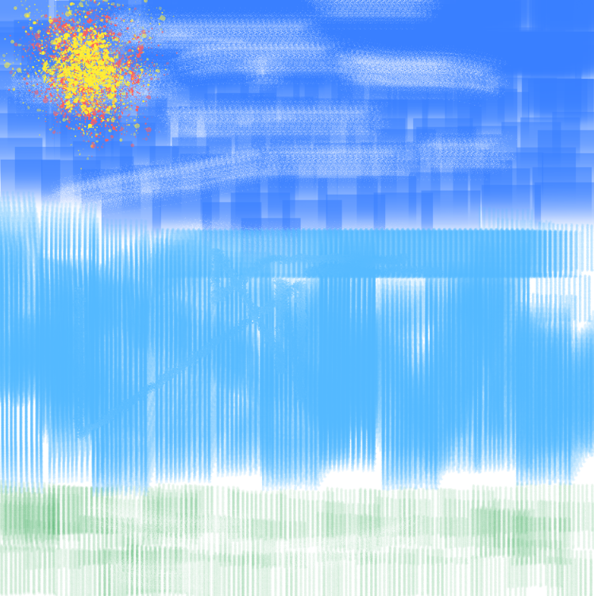
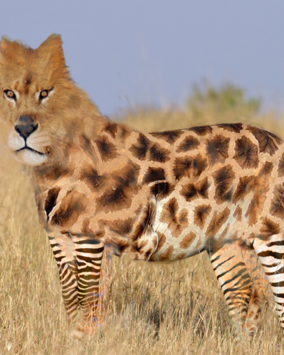

Aiden's Portfolio
Toggle navigation
digital arts and design
Square Project
This project was meant for us to create 12 images with black and white squares to convey different moods.
Passive Active Mysterious
We were assigned to create 3 black and white images with shapes and masking to create moods.

Abstract Brush Project
We were assigned to use different brushes and custom brushes to create a piece of art.
Fence Project
This project was meant to "repair" a picture with a broken fence post and do something creative with the fence picture.

Animal Morph
We were meant to combine animals to make a morph. I chose Zebra, Lion and Giraffe.
Art Dispersion
We created a thano's like dispersion images where we split people apart into particles.
Art Displacement
Making and streching images to make them look like a part of the environment..
Mandalas
We used multiple colors that combined create multiple shapes.
Vector Icons
We created lots of different objects as vector icons.
Logos
I created some 'personal' logos themed around myself.
Vector Landscape
We created vector landscapes using Adobe Illustrator.
Vector Portrait
A self portrait using what we've learned in Adobe Illustrator..